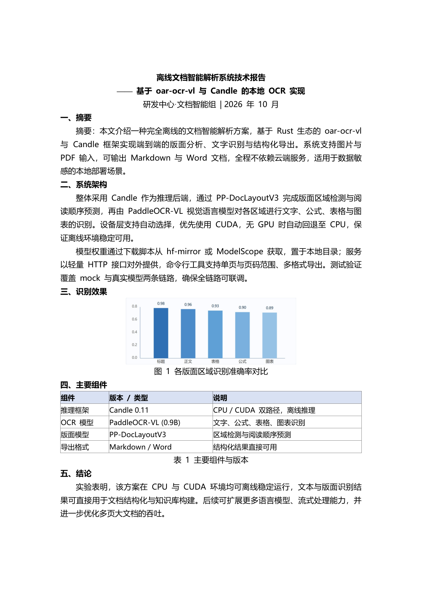
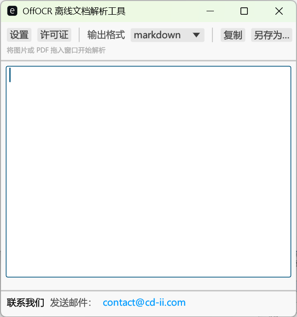
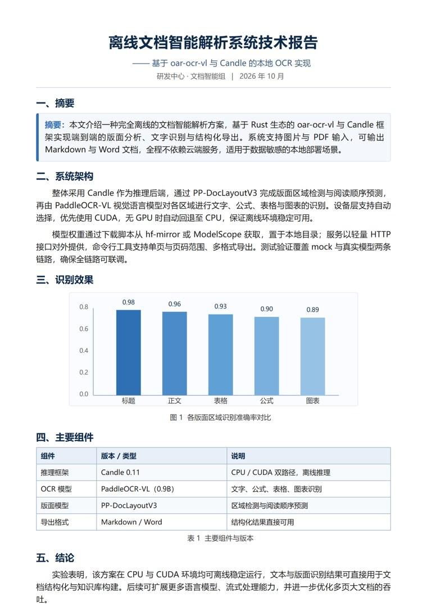

OffOCR · 离线文档解析工具 ｜ 离线 OCR，隐私无忧
面向涉密与敏感行业、离线与内网工作环境：版面分析与识别在你的设备上完成，文档不出内网，输出带层级、表格、公式、图片的 Markdown / Word，数据完全由你掌控。

时长 19 秒 · 含背景音乐 · 各项能力详见下方版块介绍
识别在本机完成，文档不出设备、不上云，数据归你所有、由你掌控，无第三方留存。
推理全程离线，内网隔离、断网或野外环境均可运行，不依赖任何外部 API 与账号。
按设备绑定与有效期管理的授权校验，未授权启动即提示，适配采购与合规审计。
政务、军工、金融、司法、海关等行业的涉密与敏感文档，可在不接触外网的前提下完成结构化。
把非结构化扫描件加工成可直接归档、入库与检索的文档，全程离线。
识别标题、副标题、段落、表格、公式、图片与印章，并还原阅读顺序。
支持 PNG、JPG、JPEG、BMP 与多页 PDF，可按页码范围（如 1-5）选择性处理。
保留标题层级、段落、表格与分页，并把识别出的图片插入文档，格式尽量还原。
CUDA 可用时自动走 GPU，否则回退 CPU，无需手动指定设备即可开箱运行。
识别在本机服务上完成，命令行与桌面应用开箱即用，断网也能跑。
内置许可证校验：设备绑定、有效期管理，未授权启动即提示，适配采购审计。
Windows 桌面应用：把图片 / PDF 拖进窗口即可解析，全程离线，数据不出本机。

以一份技术报告为样本，展示图片与 PDF 输入，以及识别后导出的 Word 文档效果。

A4 扫描/导出图片（PNG）直接上传识别。
多页 PDF 逐页渲染后识别，保留分页与阅读顺序。
识别后导出 Word：标题、表格、图表与图片完整还原。
在 Windows 上下载解压软件、准备模型与许可证，一条命令启动服务，客户端即连即用。
发布包解压后保持如下结构：三个可执行文件与 license.dat 同目录，模型放到 /models 目录。
license.dat
offocr-cli.exe
offocr-service.exe
offocr-ui.exe
/models运行软件目录自带的下载脚本，自动把文本识别与版面分析两个模型下载到 models/ 目录；离线环境也可按 MODELS.md 手动放置。
powershell -ExecutionPolicy Bypass -File .\models\download.ps1把发布者签发的 license.dat 放到软件目录，或用启动参数 --license <路径>、环境变量 OFFOCR_LICENSE 指定路径。未授权时启动会提示「当前使用软件未授权」，请联系发布者获取。
一条命令启动本地识别服务：GPU 可用自动用 GPU，否则回退 CPU。
dist\offocr-service.exe --model-path models命令行上传图片 / PDF，导出 Markdown 或 Word；或双击 offocr-ui.exe，把文档拖进窗口解析。
dist\offocr-cli.exe ocr test\demo.png --format md,docx
dist\offocr-cli.exe check
dist\offocr-ui.exe